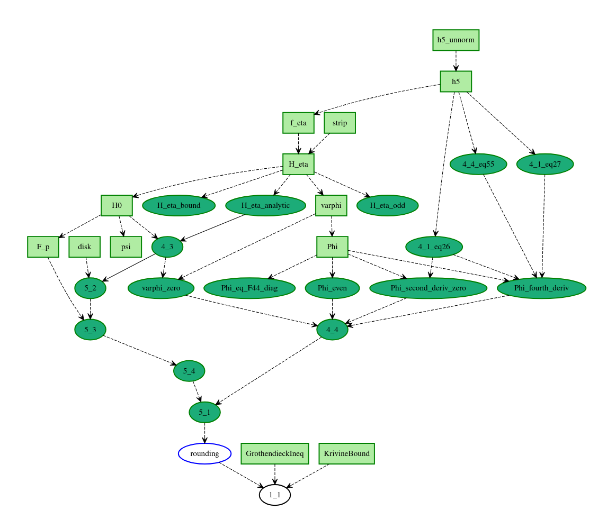
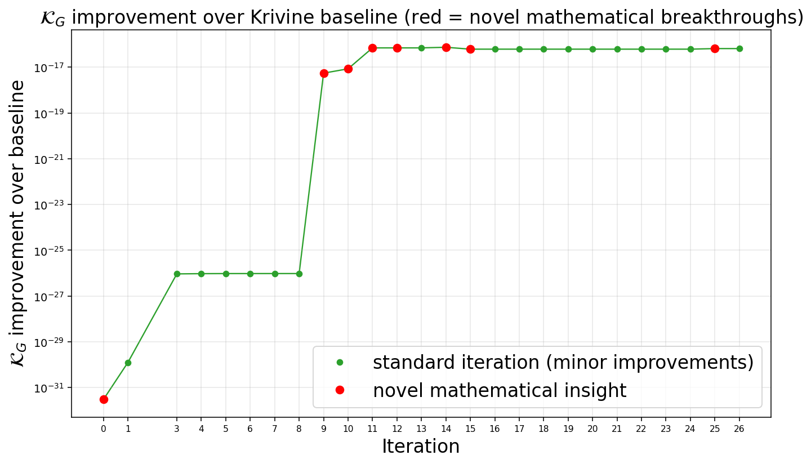

An AI agent iteratively refines Lean code inside partially formalized Lean blueprints, with Lean checking the proof obligations alongside certified interval-arithmetic numerics, to tighten analytic constant bounds.
Abstract
AI agents are increasingly capable of discovering new mathematical results, yet their reasoning and generated proofs can be difficult to understand and verify. We introduce an interpretable framework for AI-guided mathematical discovery, focused on improving quantitative bounds on analytic constants. Our key insight is that existing proofs often contain slack in intermediate lemmas, which can be tightened without reconstructing the entire argument. To exploit this structure, we represent proofs as partially-formalized Lean blueprints: human-interpretable dependency graphs of definitions, lemmas, and theorems. An AI agent then iteratively refines the Lean code while preserving the blueprint's dependency structure, allowing local improvements to automatically propagate to a verified final bound. This interpretable structure allows humans to inspect the agent's refinements and understand how local improvements propagate to the final theorem. For Grothendieck's constant ($\mathcal{K}_G$), we obtain $$ \mathcal{K}_G \leq \fracπ{2\log(1+\sqrt{2})} - 10^{-17}, $$ an explicit numerical improvement over Krivine's 1977 bound. For Korenblum's constant ($\mathcal{K}_K$), we obtain $$ \mathcal{K}_K \geq 0.356565, $$ improving Wang's 2025 bound of $0.3554$. Our experiments demonstrate the potential of both partial formalization and iterative agentic refinement for interpretable mathematical discovery.
Problem
Many proofs of bounds on analytic constants contain slack in intermediate lemmas, and AI-generated mathematics can be hard to interpret and verify. The goal is to tighten quantitative bounds on the Grothendieck and Korenblum constants through verified local refinements that humans can inspect.
Approach
Proofs are represented as partially formalized Lean blueprints, which are dependency graphs of definitions, lemmas and theorems. A planner/generator/evaluator agent proposes local edits to intermediate estimates and leaves the graph structure unchanged. A verifier checks the Lean obligations and the interval-arithmetic certificates from an Arb-based numerics backend. The verification result is fed back as the optimization signal, so local improvements propagate to the final bound.

Figure 9: Lean Blueprint for Grothendieck’s constant
Results
The method proves K_G ≤ π/(2 log(1+√2)) − 10^{-17}, an explicit improvement over Krivine's bound and over the 9.56·10^{-33} baseline derived from Braverman et al. It also proves K_K ≥ 0.356565, improving Wang's 2025 bound of 0.3554. Ablations show that the full framework reduces C_r by 400,000×, compared with 250× for a basic agent.

Figure 5: Magnitude of bound improvements over refinement iterations, with red entries denoting the discovery of “interesting” strategies, as judged by domain experts.